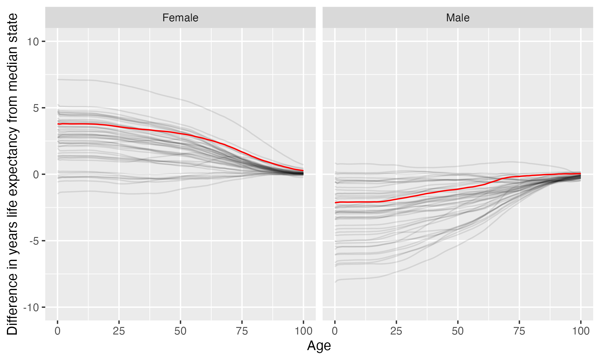

New College of Florida
New College of Florida is located in Sarasota, Florida. It is a public, 4-year or above institution.
From Wikipedia: New College of Florida is a public liberal arts college in Sarasota, Florida. It was founded in 1960 as a private institution known simply as New College, spent several years merged into the University of South Florida, and in 2001 became an autonomous college, the eleventh independent school of the State University System of Florida as the honors college for the state system. Upon achieving independence, the school adopted its current name: New College of Florida. As an honors college, the college is distinguished by its unusual “contract system”, in which students are given written evaluations instead of grades and agree to semester-long contracts in which a certain number of classes must be passed. For example, in a “three out of five” contract, a student who failed two classes would face no penalty, although one who failed three classes would risk losing all credits for the entire semester. The system was devised to encourage academic experimentation and foster curiosity about disparate topics outside one’s usual course of study. New College students are required to complete an undergraduate thesis project and baccalaureate exam, during which the student presents and defends their project to a committee of professors. New College has been cited as having the highest percentage of students receiving a Fulbright scholarship of any college or university in the United States.
Notes
These are items that bear looking into more closely.
This institution is undergoing a substantial change in leadership and mission; past information about the college such as majors, tenure track faculty lines, and other information may not be predictive of the future.
California considers the state this institution is in to have one or more anti-LGBTQ+ laws. It prohibits California-sponsored travel to this state as a safety measure. See more here.
“Florida is openly hostile toward African Americans, people of color and LGBTQ+ individuals. Before traveling to Florida, please understand that the state of Florida devalues and marginalizes the contributions of, and the challenges faced by African Americans and other communities of color” according to an NAACP travel advisory of May 20, 2023.
By state law, this public institution may not spend state or federal money on diversity, equity, or inclusion efforts, with limited exceptions. There are also government restrictions on what courses can be taught.
In the most recent year available, this institution ran a deficit of $11 M
This institution’s full-time undergraduate enrollment has tended to decrease over time.
From 2010 to 2021, full time undergraduate enrollment dropped from 801 to 615, a decline of 23.2%
Overview of institution
Institution kind: Baccalaureate Colleges: Arts & Sciences Focus
Undergrad program: Arts & sciences focus, no graduate coexistence
Graduate program: Postbaccalaureate: Single program-Other
Enrollment profile: Very high undergraduate (see more details below)
Average net price for undergrads on financial aid: $9,727 (This is 70% the average cost of Harvard).
Average net price for families with $30K-48K income: $6,580 (This is $5,184 more expensive than what Harvard costs for equivalent students).
Actual price for your family: Go here to see what your family may be asked to pay. It can be MUCH lower than the average price but also higher for some.
Size and setting: Four-year, very small, highly residential
In state percentage: 82.3% of first year students come from Florida
In US percentage: 99.4% of first year students come from the US (note that 0.0% have no residence reported)
Graduation rate (within 6 years) for students seeking a Bachelors: 66.3% (this is what is usually reported as “graduation rate”)
Graduation rate (within 4 years) for students seeking a Bachelors: 57.9%
Percent of students seeking a Bachelors who transfer out of this institution: 26.1%
Student to tenure-stream faculty ratio: 7.3 (undergrads to tenure-stream faculty) [Tenure explained]
Student to faculty ratio: 6 (undergrads to all faculty)
Degrees offered: Bachelor’s degree, Master’s degree
Schedule: Four-one-four plan
Institution provides on campus housing: Yes
Dorm capacity: There are enough dorm beds for 629 students
Freshmen required to live on campus: No
Meal plan: Yes, number of meals per week can vary
Covid vaccination requirement for students: This institution was never reported as requiring covid vaccination for students (based on info from here)
Covid vaccination requirement for faculty/staff: This institution was never reported as requiring covid vaccination for faculty and/or staff (based on info from here)
Advanced placement (AP) credits used: Yes
Disabilities: 14 percent of undergrads are registered as having disabilities.
Overview of location
- Abortion in this state: Restrictive (based on https://states.guttmacher.org/policies/ as of May 10, 2023)
- Gun law stringency: C- (higher grade = more stringent)
- State rep support for contraception: 44.4% of US reps from this state voted in favor of legal protections for contraception.
- State rep support for recognizing same-sex and interracial marriage: 63% of US reps from this state voted in favor of requiring states to recognize same-sex and interracial marriages performed in other states
- Anti-trans legislative risk: Do not travel (based on Erin Reed’s work, as of May 19, 2023)
- Ecological region: Southeastern conifer forests
- Biome: Temperate Conifer Forests
- Distance to mountains: 458.3 miles to Appalachian Mountains
- Climate: See overview at WeatherSpark
Similar institutions
This is using information about school size, acceptance rate, yield rate, graduation rate, cost, athletic conference, and similar metrics, but it can miss important axes of similarity (for example, culinary versus hair styling schools).
Map
Enrollment
| New College of Florida | Change over ≤ 11 years | Trend | |
|---|---|---|---|
| Undergrads (full time) | 615 (2021) |

|
↓ -16 per year |
| Undergrads (part time) | 17 (2021) |

|
|
| Grad students (full time) | 27 (2021) |

|
|
| Grad students (part time) | 0 (2021) |

|
|
| Admission rate (undergrads) | 74% (2021) |

|
|
| Yield rate (percent of applicants offered undergraduate admission who accept) | 13% (2021) |

|
|
| Graduation rate (bachelors in 6 years) | 66% (2021) |

|
|
| Transfer out rate (bachelors) | 26% (2021) |

|
Student financing
At many universities, almost no students pay the listed tuition and fees (“sticker price”): instead, their financial aid package lowers this dramatically, but how much students pay can vary substantially based on family income and other factors. The tuition below is the average across many students receiving aid: your family may be asked to pay less or more than this.
| New College of Florida | Change over ≤ 11 years | |
|---|---|---|
| Average net price (for students awarded aid) | $9,727 (2020) |

|
| Undergrads getting federal aid | 80% (2021) |

|
| Undergrads getting any aid | 99% (2021) |

|
| Undergrads getting Pell grants | 35% (2021) |

|
Teaching
| New College of Florida | Change over ≤ 11 years | Trend | |
|---|---|---|---|
| Undergrads per tenure track instructor (lower is better) | 7.3 (2020) |

|
↓ -0.7 per year |
| Undergrads per instructor (lower is better) | 6.0 (2020) |

|
↓ -0.7 per year |
| Total instructors | 108 (2020) |

|
↑ 4.5 per year |
| Tenure track instructors | 89 (2020) |

|
↑ 3.7 per year |
| Non-tenure track instructors | 19 (2020) |

|
Student details
| New College of Florida | Change over ≤ 11 years | Trend | |
|---|---|---|---|
| Dorm capacity | 629 (2021) |

|
↓ -0.7 per year |
| Percent of undergrads with registered disabilities (≤3 is rounded up to 3) | 14% (2021) |

|
Institution finances
| New College of Florida | Change over ≤ 11 years | Trend | |
|---|---|---|---|
| Revenue from tution and fees | 1.3% (2021) |

|
|
| Revenue minus expenses | -$11 M (2021) |

|
↓ -$826,005 per year |
| Revenue | $49 M (2021) |

|
↑ $2.0 M per year |
| Expenses | $61 M (2021) |

|
↑ $2.8 M per year |
| Assets | $96 M (2021) |

|
Graduation rates
Graduation rates for bachelor’s degrees within 150% of normal time (6 years for a 4-year degree). Note that this uses US federal demographic data: it only has two genders and a specified set of ethnicities and races. For groups with small numbers, the graduation rate may be highly variable year to year (do all three people in this group graduate this year or just two of three, for example).
| New College of Florida | Change over ≤ 11 years | |
|---|---|---|
| Total | 66% (2021) |

|
| Men | 67% (2021) |

|
| Women | 66% (2021) |

|
| American Indian or Alaska Native men | 100% (2017) |

|
| American Indian or Alaska Native women | 0% (2016) |

|
| Asian men | 50% (2021) |

|
| Asian women | 67% (2021) |

|
| Black or African American men | 100% (2021) |

|
| Black or African American women | 67% (2021) |

|
| Hispanic men | 45% (2021) |

|
| Hispanic women | 50% (2021) |

|
| Native Hawaiian or other Pacific Islander women | 100% (2015) |

|
| White men | 73% (2021) |

|
| White women | 68% (2021) |

|
| Two or more races men | 50% (2021) |

|
| Two or more races women | 60% (2021) |

|
| Nonresident alien men | 100% (2021) |

|
| Nonresident alien women | 100% (2021) |

|
Freshmen demographics
Demographic data for first time degree-seeking students. Note that this uses US federal demographic data: it only has two genders and a specified set of ethnicities and races.
| New College of Florida | Change over ≤ 11 years | |
|---|---|---|
| Men (percent freshmen) | 29% (2021) |

|
| Women (percent freshmen) | 71% (2021) |

|
| American Indian or Alaska Native men (percent freshmen) | 0% (2021) |

|
| American Indian or Alaska Native women (percent freshmen) | 0% (2021) |

|
| Asian men (percent freshmen) | 0% (2021) |

|
| Asian women (percent freshmen) | 3.8% (2021) |

|
| Black or African American men (percent freshmen) | 1.9% (2021) |

|
| Black or African American women (percent freshmen) | 3.8% (2021) |

|
| Hispanic men (percent freshmen) | 5.6% (2021) |

|
| Hispanic women (percent freshmen) | 12% (2021) |

|
| Native Hawaiian or Other Pacific Islander men (percent freshmen) | 0% (2021) |

|
| Native Hawaiian or Other Pacific Islander women (percent freshmen) | 0% (2021) |

|
| White men (percent freshmen) | 19% (2021) |

|
| White women (percent freshmen) | 41% (2021) |

|
| Two or more races men (percent freshmen) | 1.2% (2021) |

|
| Two or more races women (percent freshmen) | 5% (2021) |

|
| Race ethnicity unknown men (percent freshmen) | 1.2% (2021) |

|
| Race ethnicity unknown women (percent freshmen) | 3.1% (2021) |

|
| Nonresident alien men (percent freshmen) | 0% (2021) |

|
| Nonresident alien women (percent freshmen) | 1.2% (2021) |

|
Freshmen geography
| New College of Florida | Change over ≤ 11 years | |
|---|---|---|
| In state | 82% (2021) |

|
| US | 99% (2021) |

|
| Not reported | 0% (2021) |

|
Tenure track faculty
Tenure track faculty are those who are eligible for tenure. This includes both pre-tenure and tenured faculty. Once faculty get tenure, they are (generally) protected from being fired for intellectual reasons, helping to ensure their freedom in teaching and research. They can still lose their positions for misconduct, financial problems, not fulfilling their duties, or other reasons. Note that this chart uses US federal demographic data: it only has two genders and a specified set of ethnicities and races.
| New College of Florida | Change over ≤ 11 years | Trend | |
|---|---|---|---|
| Total (tenure-track count) | 89 (2020) |

|
↑ 3.7 per year |
| Women (tenure-track count) | 46 (2020) |

|
↑ 2.0 per year |
| Men (tenure-track count) | 43 (2020) |

|
↑ 1.7 per year |
| American Indian or Alaska Native (tenure-track count) | 1 (2020) |

|
↑ 0.2 per year |
| Asian (tenure-track count) | 3 (2020) |

|
|
| Black or African American (tenure-track count) | 3 (2020) |

|
|
| Hispanic or Latino (tenure-track count) | 8 (2020) |

|
↑ 0.7 per year |
| Native Hawaiian or other Pacific Islander (tenure-track count) | 0 (2020) |

|
|
| White (tenure-track count) | 62 (2020) |

|
↑ 1.3 per year |
| Two or more races (tenure-track count) | 1 (2020) |

|
↑ 0.1 per year |
| Nonresident alien (tenure-track count) | 11 (2020) |

|
↑ 1.3 per year |
Non-tenure track faculty
Non-tenure track faculty are not eligible for tenure. Some are hired one semester at a time, some have multi-year contracts. They typically have a higher teaching load than tenure track faculty, leaving less time for research or other creative endeavors. They are also easier to fire than tenured faculty. Sometimes they are external experts (a noted musician, a former senator) who are hired to teach some classes without the expected permanence of a tenure-track position. Note that this chart uses US federal demographic data: it only has two genders and a specified set of ethnicities and races.
| New College of Florida | Change over ≤ 11 years | Trend | |
|---|---|---|---|
| Total (non-tenure-track count) | 19 (2020) |

|
|
| Women (non-tenure-track count) | 13 (2020) |

|
↑ 1.0 per year |
| Men (non-tenure-track count) | 6 (2020) |

|
|
| American Indian or Alaska Native (non-tenure-track count) | 0 (2020) |

|
|
| Asian (non-tenure-track count) | 4 (2020) |

|
↑ 0.5 per year |
| Black or African American (non-tenure-track count) | 0 (2020) |

|
|
| Hispanic or Latino (non-tenure-track count) | 1 (2020) |

|
|
| Native Hawaiian or other Pacific Islander (non-tenure-track count) | 0 (2020) |

|
|
| White (non-tenure-track count) | 9 (2020) |

|
|
| Two or more races (non-tenure-track count) | 0 (2020) |

|
|
| Nonresident alien (non-tenure-track count) | 5 (2020) |

|
↑ 0.4 per year |
Library facilities
| New College of Florida | Change over ≤ 11 years | Trend | |
|---|---|---|---|
| Number of physical books | 208,926 (2021) |

|
↓ -10,253 per year |
| Physical library circulations per students and faculty | 13 (2020) |

|
|
| Digital library circulations per students and faculty | 26 (2020) |

|
Life expectancy
This hopefully will not be relevant for potential students, but it may be for people moving to an area longer term, such as faculty and staff choosing where to live. This uses information from US National Vital Statistics Reports for 2020; like much federal data, it assumes people are male or female. For age difference from median, it is from the median state, averaging across all genders (one consequence of this is that the difference from the median life expectancy is almost always negative for men).
- Life expectancy at birth: 80.5 years women (3.8 years over the median), 74.6 years men (2.1 years below the median)
- Remaining life expectancy at age 18: 63.2 years women (3.7 years over the median), 57.4 years men (2.1 years below the median)
- Remaining life expectancy at age 30: 51.6 years women (3.5 years over the median), 46.4 years men (1.7 years below the median)
- Remaining life expectancy at age 45: 37.7 years women (3.2 years over the median), 33.3 years men (1.2 years below the median)
- Remaining life expectancy at age 60: 24.6 years women (2.7 years over the median), 21.2 years men (0.8 years below the median)
We can also plot the extra / fewer years of life expected for this state (red) compared to other states (dark gray) at each age. Again, this is normalized for the median state.

SAT scores
| New College of Florida | Change over ≤ 11 years | |
|---|---|---|
| Applicants submitting SAT | 83% (2021) |

|
| SAT Evidence Based Reading and Writing 25th percentile score | 590 (2021) |

|
| SAT Evidence Based Reading and Writing 75th percentile score | 700 (2021) |

|
| SAT Math 25th percentile score | 530 (2021) |

|
| SAT Math 75th percentile score | 640 (2021) |

|
ACT scores
| New College of Florida | Change over ≤ 11 years | Trend | |
|---|---|---|---|
| Applicants submitting ACT | 35% (2021) |

|
|
| ACT Composite 25th percentile score | 23 (2021) |

|
↓ -0.4 per year |
| ACT Composite 75th percentile score | 29 (2021) |

|
|
| ACT English 25th percentile score | 24 (2021) |

|
↓ -0.4 per year |
| ACT English 75th percentile score | 30 (2021) |

|
↓ -0.4 per year |
| ACT Math 25th percentile score | 19 (2021) |

|
↓ -0.6 per year |
| ACT Math 75th percentile score | 26 (2021) |

|
↓ -0.4 per year |